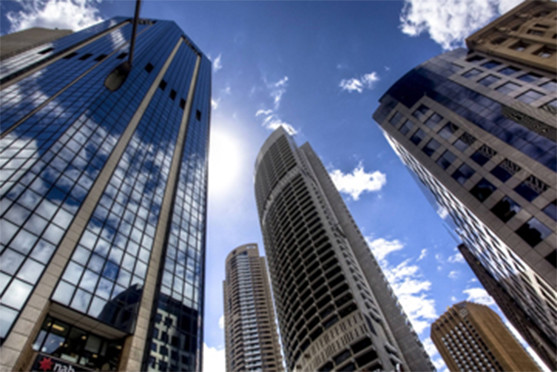

贵州茅台：谁敢涨价就砸谁的饭碗
2017-04-22

新华网北京4月22日北京电（杨玉云）4月21日，茅台集团董事会听取近期重大工作专题汇报，集团董事长袁仁国，党委书记、总经理李保芳在听取汇报后一致表示：近期茅台酒终端价格上涨，是中间环节在抬高价格，茅台将采取措施坚决把经销商的市场终端价格稳定在合理区间，谁制造市场乱象就砸谁的饭碗，经销商必须要令行禁止，谁“不听招呼”就一定严格按照规定严厉处罚。
“价格问题不是简单的经济问题，而是政治问题”
袁仁国、李保芳强调：一、价格必须得稳住、管好，这是茅台持续稳定，健康发展的关键；二、茅台说到做到，不放空话，之前形成措施必须落实，最近要有所动作，最后要拿出真功夫来干这事。三、价格的问题，不是简单的经济问题，而是政治问题，涉及到老百姓就是政治问题。
袁仁国、李保芳说，要增强政治意识、大局意识、核心意识、看齐意识，从讲政治的高度来认识茅台价格的重要性和必要性，要从可持续发展的高度来认识价格的重要性和必要性，要以严肃问责的态度对待价格问题，茅台是我国具有自主知识产权的民族品牌，目前已成为世界上烈酒总市值第一、当今单品销量第一的品牌。从中央领导到全国人民都很关注茅台。我们要讲政治，一是国家不希望一个商品由于它出现了短缺，价格就可以暴涨，就可以获取暴利，就让个别的人从中渔利，二是老百姓不希望喝超出他们承受能力范围的茅台酒。作为国有企业如果这两条都管不好，就是不讲政治。